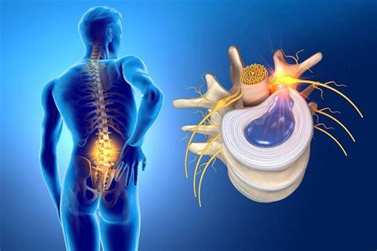

Découvrir le terme « hernie discale » sur un compte rendu d'imagerie suscite souvent de l'inquiétude. Pourtant, une hernie discale n'est pas une lésion irréversible : le corps humain possède une capacité remarquable à résorber spontanément le matériel discal migré.

Hernie conflictuelle ou non conflictuelle : comprendre la différence
Bien que le terme « hernie » effraie souvent, il est essentiel de distinguer ce qui se voit sur une image de ce qui se passe réellement dans votre corps. Une hernie discale n'est pas systématiquement conflictuelle. Cela signifie qu'un disque intervertébral peut présenter un débordement ou une saillie anatomique sans pour autant entrer en contact avec une racine nerveuse ni provoquer d'irritation ou de compression.
Dans de nombreuses situations cliniques, la hernie est dite "non conflictuelle" : elle est simplement présente dans l'espace rachidien sans perturber le trajet ni le fonctionnement du nerf. C'est l'examen clinique (association des symptômes, bilan neurologique et mobilité) qui permet de déterminer si la hernie observée est bel et bien responsable des douleurs ressenties.
Pour mieux comprendre la fréquence de ces anomalies discales indolores chez les personnes en parfaite santé, découvrez notre article dédié : Mon IRM montre une hernie discale : faut-il s'inquiéter ?.
La science face aux hernies : le phénomène de résorption spontanée
Lorsqu'une hernie est réellement symptomatique et conflictuelle, les méta-analyses récentes montrent que plus le fragment discal migre ou est volumineux, plus la probabilité qu'il se résorbe spontanément est élevée (Zhong et al., 2017). L'organisme déclenche une réaction immunitaire et macrophagique naturelle qui élimine progressivement le matériel discal en excès au fil des mois.
La prise en charge au cabinet à Epagny Metz-Tessy
Le traitement en kinésithérapie ne cherche pas à "pousser" ou "remettre" le disque, mais à créer les conditions mécaniques idéales pour réduire l'inflammation et l'inhibition antalgique :
- Examen mécanique MDT (McKenzie) : identifier des exercices de charge ou de décharge réduisant la compression nerveuse et favorisant la centralisation.
- Déconstruction des appréhensions : vous réapprendre à bouger, vous pencher et porter des charges sans crainte.
- Accompagnement et patience : la guérison discale s'inscrit dans le temps. En cas d'absence de progrès ou d'aggravation neurologique, nous travaillons en lien étroit avec votre médecin généraliste.
Questions fréquentes
Une hernie discale peut-elle disparaître toute seule ?
Oui. La recherche scientifique confirme que jusqu'à 66 % à 70 % des hernies discales se résorbent spontanément au fil du temps grâce au travail d'élimination macrophagique par l'organisme.
Puis-je continuer à faire du sport avec une hernie discale ?
Oui, l'activité physique adaptée est vivement encouragée dès que la phase hyperalgique s'estompe. La kinésithérapie vous aide à adapter vos entraînements en toute sécurité.
Références scientifiques & Littérature
- Zhong M, Liu JT, Jiang H, et al. Incidence of spontaneous resorption of lumbar disc herniation: A meta-analysis. Pain Physician, 2017; 20(1):E45-E52.
- Brinjikji W, Luetmer PH, Comstock B, et al. Systematic literature review of imaging features of spinal degeneration in asymptomatic populations. AJNR, 2015; 36(4):811-816.
- Chou R, Qaseem A, Owens DK, Shekelle P. Diagnostic imaging for low back pain: advice for high-value health care. Annals of Internal Medicine, 2011.